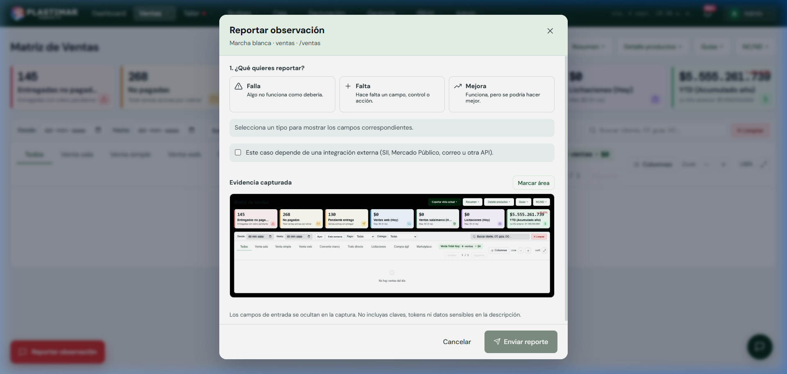

1. ¿Qué es el Widget de Observaciones y para qué sirve?
Canal Oficial de Marcha BlancaDurante la marcha blanca de un sistema nuevo, es natural que surjan dudas, ajustes de pantallas o situaciones imprevistas. Para evitar que las observaciones queden anotadas en papeles sueltos o se pierdan en grupos de WhatsApp, el ERP cuenta con un sistema de retroalimentación en vivo integrado en pantalla.
Reporte en 15 Segundos sin Salir del Sistema
Al hacer clic en [Reportar observación] en una pantalla habilitada, el ERP incorpora la ruta y el contexto disponible, y prepara una captura para facilitar el diagnóstico. Incluye siempre el identificador de la operación y el impacto.
2. Cómo Usar la Ventana de Reporte
Paso a PasoAl presionar el botón rojo en cualquier parte del ERP se desplegará la siguiente ventana interactiva:

Elegir el Tipo de Observación
Selecciona una de las 3 opciones disponibles:
- ⚠️ Falla: "Algo no funciona como debería" (ej: un botón no responde, un cálculo da error o se pegó una pantalla).
- ➕ Falta: "Hace falta un campo, control o acción" (ej: se necesita un filtro adicional por sucursal o una columna en la tabla).
- 📈 Mejora: "Funciona, pero se podría hacer mejor" (ej: un texto confuso, una sugerencia de orden o mayor rapidez).
Describir Brevemente la Situación
Escribe qué estabas intentando hacer y qué ocurrió (ejemplo: "Al guardar la venta de mesón para el cliente Colegio Andes, la tabla de despacho no cargó la dirección de entrega").
Marcar Área en la Captura (Opcional pero muy útil)
Presiona el botón [Marcar área]. Podrás arrastrar el mouse sobre la foto para encerrar en un recuadro el botón o dato exacto donde ocurrió el problema.
Enviar Reporte
Presiona [Enviar reporte]. Tu observación quedará registrada con un ticket único en la bandeja técnica de marcha blanca y se te notificará en pantalla.
3. Seguridad y Privacidad en tus Reportes
Protección de DatosRevisa la captura antes de enviarla
El widget oculta campos de entrada y elementos marcados para redacción, pero no garantiza anonimizar todo nombre, RUT, precio o texto ya visible. Nunca escribas contraseñas, cuentas, tokens, certificado, CAF ni secretos; limita la captura al área necesaria.
¿Qué pasa después de que envías un reporte?
Los reportes deben revisarse según la cadencia acordada por coordinación. Cada incidencia se clasifica por severidad; un bloqueo operacional requiere además aviso inmediato a la jefatura y una contingencia expresamente autorizada.
4. Reporte que permite resolver
Evidencia mínima- Módulo e identificador de venta, ODT, SKU, guía o DTE.
- Pasos realizados, resultado esperado y resultado obtenido.
- Hora y mensaje exacto, sin secretos.
- Impacto en cliente, stock, dinero, despacho o SII.
- Si puede duplicar una operación, no reintentar antes de revisar.